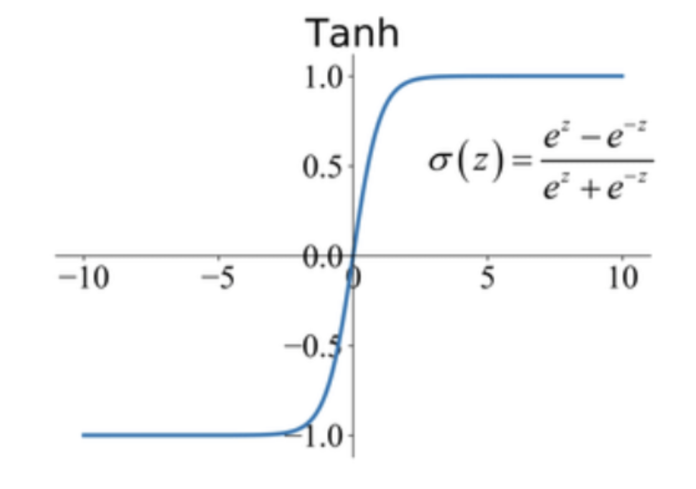

Redes Neuronales
Objetivos de la Clase
- Comprender la estructura básica de una red neuronal y cómo procesa información a través de las capas y funciones de activación.
- Entender el proceso de entrenamiento de redes neuronales mediante aprendizaje supervisado y retropropagación.
- Conocer aplicaciones actuales de las redes neuronales y familiarizarse con herramientas básicas para su implementación.
Historia de las Redes Neuronales
Origen y evolución: Desde los modelos iniciales en los años 50 hasta las redes profundas actuales.
Principales hitos:
- 1958: Perceptrón de Frank Rosenblatt.
- 1986: Popularización del algoritmo de retropropagación.
- 2012: AlexNet gana ImageNet, marcando el auge del deep learning.
Aplicaciones modernas: Visión por computadora, procesamiento del lenguaje natural, vehículos autónomos, entre otros.
En el siguiente video veremos un resumen de la historia de las redes neuronales:
Funcionamiento del Sistema Visual Humano
- Compuesto por millones de neuronas interconectadas en áreas especializadas de la corteza visual (V1, V2, V3, V4 y V5).
- Procesa imágenes de manera rápida y eficaz, manejando gran cantidad de información de forma inconsciente.
- Inspira la arquitectura de redes neuronales convolucionales utilizadas en visión por computadora.
Reconocimiento de Dígitos Escritos a Mano
- Para los humanos, reconocer dígitos escritos a mano parece una tarea sencilla.
- Sin embargo, replicar esta habilidad en un programa informático es un desafío considerable debido a la gran diversidad y variaciones en las formas de los dígitos, lo que genera numerosas excepciones.
Números escritos a mano
Redes Neuronales y Reconocimiento de Dígitos
- Las redes neuronales abordan el problema del reconocimiento de dígitos de manera innovadora: aprenden a reconocer los dígitos escritos a mano a partir de ejemplos de entrenamiento, en lugar de seguir reglas explícitas para cada forma.
- A medida que se incrementa el número de ejemplos de entrenamiento, el rendimiento de la red mejora, permitiendo reconocer patrones con mayor precisión.
Ejemplo Visual
- Para los humanos, reconocer dígitos escritos a mano parece una tarea sencilla.
- Sin embargo, replicar esta habilidad en un programa informático es un desafío considerable debido a la gran diversidad y variaciones en las formas de los dígitos, lo que genera numerosas excepciones.
Ejemplo de Red Neuronal
¿Qué es una Red Neuronal?
- Definición: Conjunto de neuronas artificiales interconectadas que simulan el funcionamiento de las neuronas biológicas.
- Componentes clave:
- Neuronas (nodos): Procesan la información.
- Pesos: Determinan la importancia de cada señal de entrada.
- Funciones de activación: Deciden si una neurona debe activarse.
Ejemplo de Red Neuronal
Ejemplo de Red Neuronal
El Perceptrón
- Desarrollado por: Frank Rosenblatt en los años 50 y 60.
- Inspirado en: Trabajos de Warren McCulloch y Walter Pitts.
- Características:
- Toma entradas binarias y produce una salida binaria.
- Es el modelo más simple de una red neuronal.
Arquitectura del Perceptrón
Funcionamiento de un Perceptrón
- Toma varias entradas \((X_1, X_2, \dots)\).
- Genera una única salida binaria.
\[ \sum_j w_j x_j > \text{Umbral} \]
Función de Activación
- La salida de la función de activación puede definirse de la siguiente manera: \[ \text{output} = \begin{cases} 0 & \text{si } w \cdot x + b \leq 0 \\ 1 & \text{si } w \cdot x + b > 0 \end{cases} \]
- b: Sesgo, ajusta el umbral de activación del perceptrón.
- w: Pesos, determinan la importancia de cada entrada.
- x: Valores de entrada al perceptrón.
Ejemplo 1: Decisión de asistir a un festival
Ejemplo de funcionamiento de pesos
Ejemplo 2: Implementación de Puerta NAND con un Perceptrón
- Los perceptrones pueden calcular funciones lógicas elementales, como AND, OR, y NAND.
- Supongamos que tenemos un perceptrón con dos entradas, cada una con un peso de -2, y un sesgo de 3:
Ejemplo de Red Neuronal
Resultado: Implementación de Puerta NAND con un Perceptrón
- Para la entrada (0 0) la salida es (1):
\[ (-2) \cdot 0 + (-2) \cdot 0 + 3 = 3 \]
- Para la entrada (1 1), la salida es (0):
\[ (-2) \cdot 1 + (-2) \cdot 1 + 3 = -1 \]
Neurona Sigmoide - Problema de Clasificación Errónea
Por ejemplo, supongamos que la red estaba clasificando erróneamente una imagen como un “8” cuando debería ser un “9”.
Podríamos averiguar cómo hacer un pequeño cambio en los pesos y sesgos para que la red se acerque un poco más a clasificar la imagen como un “9”.
Y luego repetiríamos esto, cambiando los pesos y sesgos una y otra vez para producir una mejor producción. La red estaría aprendiendo.
Diagrama del Ejemplo
Neurona Sigmoide - Cambios en los Pesos
El problema es que esto no es lo que sucede cuando nuestra red contiene perceptrones.
Un pequeño cambio en los pesos o sesgo de cualquier perceptrón individual en la red a veces puede hacer que la salida de ese perceptrón se voltee por completo.
Es decir, que la salida puede cambiar de 0 a 1, lo cual afecta significativamente el comportamiento de la red.
Neurona Sigmoide -Cambios Drásticos en la Red
Este giro puede hacer que el comportamiento del resto de la red cambie de manera muy complicada.
Aunque ahora el “9” podría clasificarse correctamente, el comportamiento de la red en otras imágenes puede cambiar completamente de manera difícil de controlar.
Esto complica la posibilidad de modificar gradualmente los pesos y sesgos para que la red se acerque al comportamiento deseado.
Neurona Sigmoide - Dificultad para Aprender
Tal vez haya alguna manera inteligente de solucionar este problema, pero no es inmediatamente obvio cómo hacer que una red de perceptrones aprenda.
- La dificultad radica en que los cambios en los pesos de una parte de la red pueden afectar de manera impredecible el comportamiento de la red en su totalidad.
Neurona Sigmoide - Introducción de Neuronas Sigmoides
Podemos superar este problema introduciendo un nuevo tipo de neurona artificial llamada neurona sigmoide.
Las neuronas sigmoides permiten un cambio gradual en la salida, en lugar de cambios abruptos como en los perceptrones.
Esto facilita el ajuste progresivo de los pesos y sesgos, permitiendo que la red “aprenda” de manera más controlada y eficiente.
La clave para que una red neuronal aprenda gradualmente es utilizar neuronas sigmoides, que permiten ajustes suaves en lugar de cambios bruscos.
Este enfoque facilita el entrenamiento de la red, permitiendo mejorar la clasificación sin afectar negativamente el comportamiento en otras tareas.
Neurona Sigmoide - Función de Activación Sigmoide
La función sigmoide es utilizada como función de activación en redes neuronales para permitir que las salidas varíen suavemente entre 0 y 1:
\[ \sigma(z) = \frac{1}{1 + e^{-z}} \]

Perceptrón
El perceptrón es el modelo más simple de una red neuronal.
- Función de activación: Función escalón.
- Salida: Binaria (0 o 1).
- Usos principales: Clasificación binaria.
- Limitaciones: No puede resolver problemas no lineales (ej. XOR).
Arquitectura de un Perceptrón:
Arquitectura Perceptrón
Neurona Sigmoide
Las neuronas sigmoides permiten obtener salidas continuas.
- Función de activación: \(\sigma(z) = \frac{1}{1 + e^{-z}}\)
- Salida: Continua entre 0 y 1.
- Usos principales: Problemas de clasificación probabilística.
Arquitectura de una Neurona Sigmoide:
Arquitectura Neurona Sigmoide
ReLU (Rectificador Lineal Unitario)
La función ReLU es la más utilizada en redes neuronales profundas.
- Función de activación: \(ReLU(z) = max(0, z)\)
- Salida: Continua entre 0 y \(\infty\).
- Usos principales: Redes profundas y convolucionales.
Arquitectura de una Red con ReLU:
Arquitectura ReLU
Tangente Hiperbólica (tanh)
La función tanh es similar a la sigmoide pero ofrece salidas entre -1 y 1.
- Función de activación: \(tanh(z) = \frac{e^z - e^{-z}}{e^z + e^{-z}}\)
- Salida: Continua entre -1 y 1.
- Usos principales: Redes recurrentes y algunas redes convolucionales.
Arquitectura de una Red con tanh:
Arquitectura tanh
Redes Neuronales Convolucionales (CNNs)
Las redes neuronales convolucionales (CNNs) son ampliamente utilizadas para problemas de visión por computadora.
- Arquitectura: Compuesta por capas de convolución, pooling y fully connected.
- Función de activación: ReLU es la más común.
- Usos principales: Clasificación de imágenes, detección de objetos.
Arquitectura de una CNN:
Arquitectura CNN
Redes Neuronales Recurrentes (RNNs)
Las redes neuronales recurrentes (RNNs) son efectivas para problemas secuenciales.
- Arquitectura: Los nodos tienen conexiones hacia adelante y hacia atrás, lo que permite tener “memoria”.
- Función de activación: tanh y sigmoide.
- Usos principales: Procesamiento de lenguaje natural, series temporales.
Arquitectura de una RNN:
Arquitectura RNN
Redes de Memoria a Largo Plazo (LSTM)
Las LSTM (Long Short-Term Memory) son un tipo especial de RNN que pueden aprender dependencias a largo plazo.
- Arquitectura: Incluyen “celdas de memoria” que permiten almacenar información durante largos periodos.
- Función de activación: tanh y sigmoide.
- Usos principales: Análisis de secuencias largas.
Arquitectura de una LSTM:
Arquitectura LSTM
Redes de Retroalimentación (Feedback Networks)
Estas redes permiten que las salidas de ciertas capas alimenten a las capas anteriores.
- Función de activación: sigmoide, tanh, y a veces ReLU.
- Usos principales: Análisis de datos donde las salidas deben influir en las entradas anteriores.
Arquitectura de una Red de Retroalimentación:
Arquitectura Feedback
Comparación de Redes Neuronales y Funciones de Activación
| Red Neuronal / Función de Activación | Salida | Función de Activación | Usos Principales | Entrada |
|---|---|---|---|---|
| Perceptrón | Binaria (0 o 1) | Función escalón | Clasificación binaria | Binaria |
| Sigmoide | Continua (0 a 1) | \(\sigma(z) = \frac{1}{1 + e^{-z}}\) | Clasificación probabilística | Numérica continua |
| ReLU (Rectificador Lineal Unitario) | \(max(0, z)\) | \(ReLU(z) = max(0, z)\) | Redes profundas y convolucionales | Numérica continua |
| tanh (Tangente Hiperbólica) | Continua (-1 a 1) | \(tanh(z) = \frac{e^z - e^{-z}}{e^z + e^{-z}}\) | Redes recurrentes y algunas convolucionales | Numérica continua |
Introducción al Backpropagation
El algoritmo de backpropagation se utiliza para ajustar los pesos de una red neuronal minimizando el error entre la salida esperada y la salida obtenida.
¿Por qué es Importante Backpropagation?
- Permite a las redes neuronales aprender de los datos y mejorar sus predicciones.
- Optimiza los pesos para minimizar el error a través de un proceso iterativo.
Ciclo Completo de Backpropagation
- Forward Propagation: Se calcula la salida.
- Cálculo del Error: Se mide el error entre la salida predicha y la real.
- Backward Propagation: Se ajustan los pesos propagando el error hacia atrás.
- Actualización de Pesos: Los pesos se ajustan utilizando el gradiente de la función de pérdida.
Ajuste de Pesos en una Red Neuronal
- Cada neurona realiza una suma ponderada de sus entradas: \[ z = w_1 x_1 + w_2 x_2 + \dots + w_n x_n + b \]
- La salida de la neurona se obtiene aplicando una función de activación: \[ y = f(z) \]
Función de Pérdida y el Gradiente
- La función de pérdida mide qué tan lejos está la predicción de la salida correcta: \[ L = \frac{1}{2} (y_{\text{pred}} - y_{\text{real}})^2 \]
- Los pesos se ajustan utilizando el descenso de gradiente: \[ w_i(t+1) = w_i(t) - \eta \frac{\partial L}{\partial w_i} \]
Ecuación Diferencial en Backpropagation
- El ajuste de los pesos sigue una ecuación diferencial: \[ \frac{d w_i}{d t} = - \frac{\partial L}{\partial w_i} \]
Ejemplo
Entrada: \(x_1 = 0.5\), \(x_2 = 0.1\)
Salida esperada: \(y_{\text{esperado}} = 1\)
Pesos iniciales:
- \(w_{11}^{(1)} = 0.4\), \(w_{12}^{(1)} = 0.2\)
- \(w_{21}^{(1)} = 0.1\), \(w_{22}^{(1)} = 0.3\)
- \(w_1^{(2)} = 0.6\), \(w_2^{(2)} = 0.5\)
- Tasa de aprendizaje: \(\eta = 0.1\)
Paso 1: Forward Propagation
Cálculo de las entradas a las neuronas ocultas:
Para la neurona oculta 1:
\[ z_1 = w_{11}^{(1)} \cdot x_1 + w_{12}^{(1)} \cdot x_2 = (0.4 \cdot 0.5) + (0.2 \cdot 0.1) = 0.22 \]
Para la neurona oculta 2:
\[ z_2 = w_{21}^{(1)} \cdot x_1 + w_{22}^{(1)} \cdot x_2 = (0.1 \cdot 0.5) + (0.3 \cdot 0.1) = 0.08 \]
Función de Activación Sigmoide
Aplicando la función de activación sigmoide a las neuronas ocultas:
Para la neurona oculta 1:
\[ a_1 = \frac{1}{1 + e^{-z_1}} = \frac{1}{1 + e^{-0.22}} \approx 0.554 \]
Para la neurona oculta 2:
\[ a_2 = \frac{1}{1 + e^{-z_2}} = \frac{1}{1 + e^{-0.08}} \approx 0.520 \]
Entrada a la Neurona de Salida
\[ z_{\text{salida}} = w_1^{(2)} \cdot a_1 + w_2^{(2)} \cdot a_2 = (0.6 \cdot 0.554) + (0.5 \cdot 0.520) \approx 0.612 \]
Aplicando la función de activación sigmoide a la neurona de salida:
\[ a_{\text{salida}} = \frac{1}{1 + e^{-z_{\text{salida}}}} = \frac{1}{1 + e^{-0.612}} \approx 0.648 \]
Paso 2: Cálculo del Error
El error en la salida es:
\[ \text{Error} = y_{\text{esperado}} - a_{\text{salida}} = 1 - 0.648 = 0.352 \]
Paso 3: Backpropagation
Cálculo del gradiente de la neurona de salida:
La derivada de la función sigmoide es:
\[ \delta_{\text{salida}} = a_{\text{salida}} \cdot (1 - a_{\text{salida}}) \cdot \text{Error} = 0.648 \cdot (1 - 0.648) \cdot 0.352 \approx 0.080 \]
Actualización de los Pesos (Salida a Ocultas)
Actualizar los pesos entre las neuronas ocultas y la neurona de salida:
Para \(w_1^{(2)}\):
\[ w_1^{(2)} = w_1^{(2)} + \eta \cdot \delta_{\text{salida}} \cdot a_1 = 0.6 + 0.1 \cdot 0.080 \cdot 0.554 \approx 0.604 \]
Para \(w_2^{(2)}\):
\[ w_2^{(2)} = w_2^{(2)} + \eta \cdot \delta_{\text{salida}} \cdot a_2 = 0.5 + 0.1 \cdot 0.080 \cdot 0.520 \approx 0.504 \]
Actualización de los Pesos (Entradas a Ocultas)
Gradientes de las neuronas ocultas:
Para la neurona oculta 1:
\[ \delta_1 = a_1 \cdot (1 - a_1) \cdot \delta_{\text{salida}} \cdot w_1^{(2)} = 0.554 \cdot (1 - 0.554) \cdot 0.080 \cdot 0.6 \approx 0.011 \]
Para la neurona oculta 2:
\[ \delta_2 = a_2 \cdot (1 - a_2) \cdot \delta_{\text{salida}} \cdot w_2^{(2)} = 0.520 \cdot (1 - 0.520) \cdot 0.080 \cdot 0.5 \approx 0.010 \]
Ajuste Final de Pesos
Actualizar los pesos entre las entradas y las neuronas ocultas:
Para \(w_{11}^{(1)}\):
\[ w_{11}^{(1)} = w_{11}^{(1)} + \eta \cdot \delta_1 \cdot x_1 = 0.4 + 0.1 \cdot 0.011 \cdot 0.5 \approx 0.401 \]
Para \(w_{12}^{(1)}\):
\[ w_{12}^{(1)} = w_{12}^{(1)} + \eta \cdot \delta_1 \cdot x_2 = 0.2 + 0.1 \cdot 0.011 \cdot 0.1 \approx 0.2001 \]
Para \(w_{21}^{(1)}\):
\[ w_{21}^{(1)} = w_{21}^{(1)} + \eta \cdot \delta_2 \cdot x_1 = 0.1 + 0.1 \cdot 0.010 \cdot 0.5 \approx 0.101 \]
Para \(w_{22}^{(1)}\):
\[ w_{22}^{(1)} = w_{22}^{(1)} + \eta \cdot \delta_2 \cdot x_2 = 0.3 + 0.1 \cdot 0.010 \cdot 0.1 \approx 0.3001 \]
Resultados
- Los pesos han sido ajustados después de aplicar el algoritmo de backpropagation.
- El proceso se repite hasta que el error se minimiza a un nivel aceptable.
Aplicaciones Actuales de las Redes Neuronales
Visión por Computadora
- Reconocimiento de imágenes y objetos: Clasificación y detección en tiempo real.
- Conducción autónoma: Interpretación del entorno por vehículos sin conductor.
- Diagnóstico médico: Detección de anomalías en imágenes médicas.
Procesamiento del Lenguaje Natural (NLP)
- Traducción automática: Conversión entre idiomas en tiempo real.
- Análisis de sentimiento: Interpretación de opiniones en redes sociales.
- Chatbots y asistentes virtuales: Interacción humana con sistemas inteligentes.
Generación de Contenido
- Redes Generativas Adversariales (GANs):
- Creación de imágenes, música y texto artificiales.
- Deepfakes: Síntesis de videos y audios realistas pero falsos.
Otros Campos de Aplicación
- Finanzas: Predicción de mercados y detección de fraudes.
- Agricultura: Monitoreo de cultivos y optimización de recursos.
- Ciencias Ambientales: Modelado climático y predicción de desastres naturales.
Conclusiones
- Evolución constante: Las redes neuronales siguen avanzando, impulsadas por nuevos algoritmos y mayor poder computacional.
- Amplia aplicabilidad: Su capacidad para abordar problemas complejos las hace indispensables en múltiples industrias.
- Desafíos futuros:
- Interpretabilidad de modelos.
- Eficiencia energética y computacional.
- Ética y sesgos en inteligencia artificial.
Aplicación Scikit-learn: Perceptron Multicapa
El Perceptrón Multicapa (MLP) es un algoritmo de aprendizaje supervisado que dado atributos:
\[ X = \{x_1, x_2, \dots, x_m\} \]
Aprende una función f() :
\[ f: \mathbb{R}^m \rightarrow \mathbb{R}^o \]
entrenando con un conjunto de datos, donde:
- ( m ) es el número de dimensiones de entrada.
- ( o ) es el número de dimensiones de salida.
Aplicación Scikit-learn: Perceptron Multicapa
El MLP se puede utilizar para:
- Clasificación
- Regresión
Descripción General del MLP
Dado un conjunto de características ( X ) y un objetivo ( y ), el MLP aprende un aproximador de función no lineal.
Conceptos Clave:
- El MLP puede tener una o más capas ocultas.
- Cada capa introduce no linealidad.
- El MLP es capaz de aprender patrones complejos en los datos.
Comparación con la Regresión Logística
- Regresión Logística: Solo tiene capas de entrada y salida.
- MLP: Tiene una o más capas ocultas entre la entrada y la salida.
Las capas ocultas permiten que el MLP capture relaciones no lineales que la regresión logística no puede.
Arquitectura del MLP
Aquí tienes un ejemplo de un MLP con una capa oculta y salida escalar:
\[ X \rightarrow \text{Capa Oculta} \rightarrow y \]

Arquitectura MLP
Arquitectura del MLP
- La capa más a la izquierda, conocida como capa de entrada, está formada por un conjunto de neuronas que representan las características de entrada.
Cada neurona en la capa oculta transforma los valores de la capa anterior mediante una sumatoria ponderada:
\[ z = \sum_{i} w_i x_i + b \]
donde ( w_i ) son los pesos y ( b ) es el sesgo.
Luego, se aplica una función de activación no lineal, como la función tangente hiperbólica:
\[ a = \tanh(z) \]
Capa de Salida
La capa de salida recibe los valores de la última capa oculta y los transforma en los valores de salida que corresponden a las predicciones o resultados del modelo.
Atributos del Módulo
El módulo contiene los atributos públicos coefs_ y intercepts_:
- coefs_: Lista de matrices de pesos, donde la matriz en el índice ( i ) representa los pesos entre la capa ( i ) y la capa ( i+1 ).
- intercepts_: Lista de vectores de sesgo, donde el vector en el índice ( i ) representa los valores de sesgo añadidos a la capa ( i+1 ).
Ventajas del Perceptrón Multicapa (MLP)
- Capacidad para aprender modelos no lineales:
- El MLP puede capturar relaciones complejas en los datos, aprendiendo modelos no lineales que otros algoritmos, como la regresión lineal o logística, no pueden.
- Aprendizaje en tiempo real (on-line learning):
- El MLP es capaz de aprender modelos en tiempo real utilizando la función
partial_fit, lo que permite el aprendizaje incremental sin necesidad de entrenar desde cero cada vez que llegan nuevos datos.
- El MLP es capaz de aprender modelos en tiempo real utilizando la función
Desventajas del Perceptrón Multicapa (MLP)
- Función de pérdida no convexa:
- El MLP con capas ocultas tiene una función de pérdida no convexa, lo que significa que existen múltiples mínimos locales. Por lo tanto, diferentes inicializaciones aleatorias de los pesos pueden conducir a diferentes precisiones de validación.
- Necesidad de ajuste de hiperparámetros:
- El MLP requiere ajustar varios hiperparámetros, como el número de neuronas ocultas, el número de capas y el número de iteraciones, lo que puede ser complejo.
- Sensibilidad al escalado de características:
- El MLP es sensible al escalado de las características, lo que implica que los datos deben ser normalizados o estandarizados.
Aplicación Scikit-learn: ¿Qué es MLPClassifier?
La clase MLPClassifier implementa un algoritmo de perceptrón multicapa (MLP) que entrena utilizando Backpropagation.
Entrenamiento de MLP
El MLP se entrena con dos arreglos:
- X: Un arreglo de tamaño \((n_{\text{samples}}, n_{\text{features}})\), que contiene las muestras de entrenamiento representadas como vectores de características en punto flotante.
- y: Un arreglo de tamaño \((n_{\text{samples}})\), que contiene los valores objetivo (etiquetas de clase) para las muestras de entrenamiento.
Representación de los Datos
\[ X = \begin{bmatrix} x_{11} & x_{12} & \cdots & x_{1n} \\ x_{21} & x_{22} & \cdots & x_{2n} \\ \vdots & \vdots & \ddots & \vdots \\ x_{m1} & x_{m2} & \cdots & x_{mn} \end{bmatrix} \]
Donde:
- \(X\), contiene las características de las muestras.
- \(y = \{y_1, y_2, \dots, y_m\}\), contiene las etiquetas de clase correspondientes.
Proceso de Entrenamiento
- Propagación hacia adelante: El MLP realiza una propagación de los valores de entrada a través de la red.
- Cálculo del error: Se calcula el error de predicción comparando la salida del modelo con las etiquetas reales.
- Backpropagation: Los errores se retropropagan a través de la red para ajustar los pesos.
- Actualización de pesos: Los pesos se ajustan iterativamente para minimizar el error utilizando un optimizador (como Stochastic Gradient Descent, Adam, Limited-memory Broyden–Fletcher–Goldfarb–Shanno algorithm).
Codigo Scikit-learn:
from sklearn.neural_network import MLPClassifier
# Conjunto de datos de ejemplo
X = [[0., 0.], [1., 1.]]
y = [0, 1]
# Configuración del MLPClassifier
clf = MLPClassifier(solver='lbfgs', alpha=1e-5,
hidden_layer_sizes=(5, 2), random_state=1)
# Entrenamiento del modelo
clf.fit(X, y)Explicación del Código
- X: Conjunto de características de entrada (vectores de características).
- y: Etiquetas de clase correspondientes.
- solver=‘lbfgs’: Algoritmo utilizado para la optimización.
- alpha=1e-5: Parámetro de regularización.
- hidden_layer_sizes=(5, 2): Configuración de las capas ocultas (5 neuronas en la primera capa oculta, 2 en la segunda).
- random_state=1: Fija la semilla para obtener resultados reproducibles.
Entrenamiento del Modelo
Una vez configurado el MLPClassifier, el modelo se entrena con los datos de entrada \(X\) y las etiquetas \(y\) mediante el método fit().
Predicción con MLPClassifier
Después de entrenar el modelo, podemos realizar predicciones con nuevos datos de entrada:
Ajuste de un Modelo No Lineal
El MLPClassifier puede ajustar un modelo no lineal a los datos de entrenamiento. Después del entrenamiento, los pesos que constituyen los parámetros del modelo están almacenados en el atributo clf.coefs_.
Resultado de los Pesos en MLPClassifier
El resultado de [coef.shape for coef in clf.coefs_] podría ser:
Cada número en la matriz representa las dimensiones de la conexión entre capas.
Entrenamiento del MLP
- MLP se entrena utilizando el algoritmo de Backpropagation (retropropagación).
- Más específicamente, utiliza alguna forma de descenso de gradiente, donde los gradientes se calculan usando Backpropagation.
Minimización de la Cross-Entropy
Para clasificación, el MLP también minimiza la función de pérdida Cross-Entropy, lo que genera un vector de probabilidades \(P(y|x)\) por cada muestra \(x\).
\[ L_{\text{Cross-Entropy}} = - \sum_i y_i \log(\hat{y}_i) \]
Donde:
- \(y_i\) son las verdaderas etiquetas.
- \(\hat{y}_i\) son las probabilidades predichas por el modelo para la clase \(i\).
Probabilidades con predict_proba
El método predict_proba permite obtener un vector de probabilidades para cada muestra. Cada elemento del vector representa la probabilidad de que la muestra pertenezca a una clase específica.
\[ P(y|x) = \hat{y}_1, \hat{y}_2, \dots, \hat{y}_n \]
Ejemplo 2 de Predicción Multietiqueta
Paso 1: Importar el MLPClassifier
- Esto importa la clase MLPClassifier del módulo sklearn.neural_network. MLPClassifier significa “Clasificador de Perceptrón Multicapa”, que es un tipo de red neuronal.
Ejemplo 2 de Predicción Multietiqueta
Paso 2: Definir los Datos de Entrada
- \(X\) son los datos de entrada, que consisten en dos muestras con dos características cada una.
- \(y\) son las etiquetas objetivo para los datos de entrada. Cada etiqueta es una lista de dos valores, representando un problema de clasificación de múltiples salidas.
Ejemplo 2 de Predicción Multietiqueta
Paso 3: Crear el MLPClassifier
from sklearn.neural_network import MLPClassifier
clf = MLPClassifier(solver='lbfgs', alpha=1e-5,
hidden_layer_sizes=(15,), random_state=1)Paso 4: Entrenar el Modelo
Esto entrena la red neuronal con los datos de entrada \(X\) y las etiquetas objetivo \(y\).
Paso 5: Predecir con el Modelo
Esto hace una predicción para una nueva muestra [1., 2.]. La salida es:
Esto significa que el modelo predice la etiqueta [1, 1] para la entrada [1., 2.].
Ejemplo 2 de Predicción Multietiqueta
Paso 6. Predecir con Otra Muestra
Esto hace una predicción para otra nueva muestra [0., 0.]. La salida es:
Esto significa que el modelo predice la etiqueta [0, 1] para la entrada [0., 0.].
Ejemplo 2 de Predicción Multietiqueta
Red Neuronal con MLPClassifier
- El código crea una red neuronal con una capa oculta de 15 neuronas.
- Se entrena en un conjunto de datos pequeño.
- Utiliza el solver lbfgs para la optimización.
- Se regulariza con un término de penalización L2 \[ \alpha=1 \times 10^{-5}\ \]
- El parámetro alpha controla la regularización L2, ayudando a prevenir el sobreajuste y mejorando el rendimiento en datos nuevos.
- Un alpha más alto aumenta la penalización sobre coeficientes grandes, minimizando la suma de sus cuadrados.
- Las predicciones muestran cómo el modelo entrenado clasifica nuevos puntos de datos.
Conclusión
- Las redes neuronales, como el Perceptrón Multicapa (MLP), ofrecen una poderosa herramienta para resolver problemas complejos de clasificación y regresión.
- Utilizando algoritmos de optimización como lbfgs y aplicando técnicas de regularización como L2, es posible entrenar modelos que generalicen bien a datos nuevos.
- Aunque presentan algunos desafíos, como la necesidad de ajustar hiperparámetros y la sensibilidad al escalado de características, las redes neuronales siguen siendo una técnica clave en el aprendizaje automático.
Referencias
- Goodfellow, I., Bengio, Y., & Courville, A. (2016). Deep Learning. MIT Press.
- Nielsen, M. A. (2015). Neural Networks and Deep Learning. Disponible en http://neuralnetworksanddeeplearning.com/.
- Chollet, F. (2018). Deep Learning with Python. Manning Publications.
- Scikit-learn Documentation. Disponible en https://scikit-learn.org/stable/documentation.html.